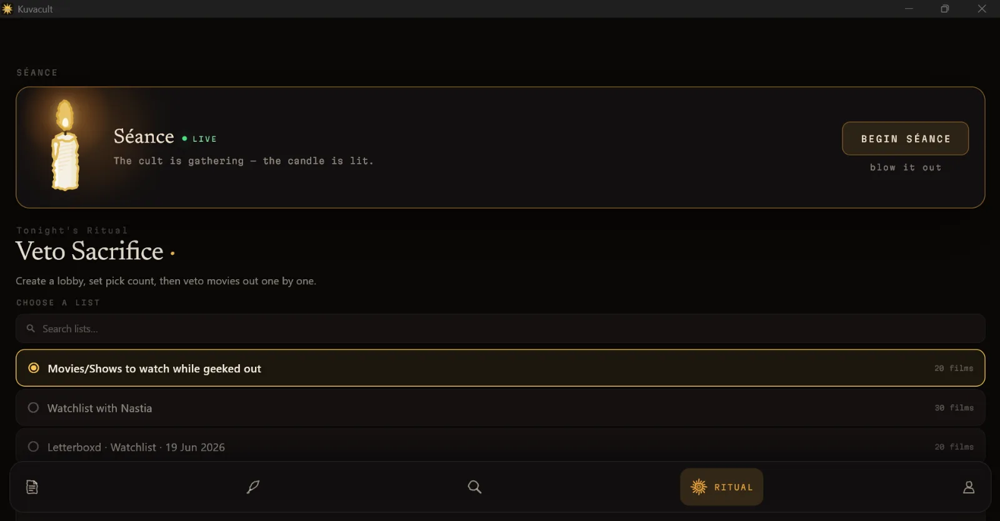
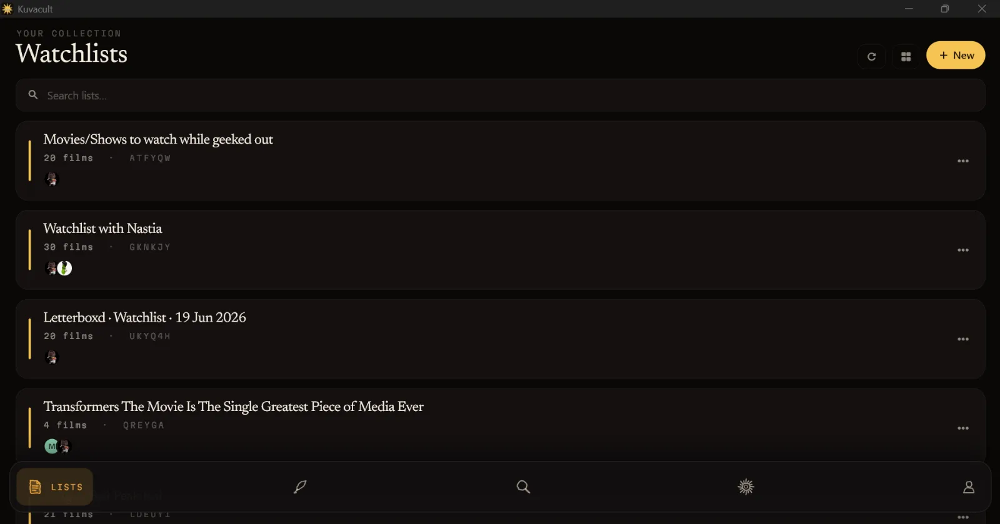
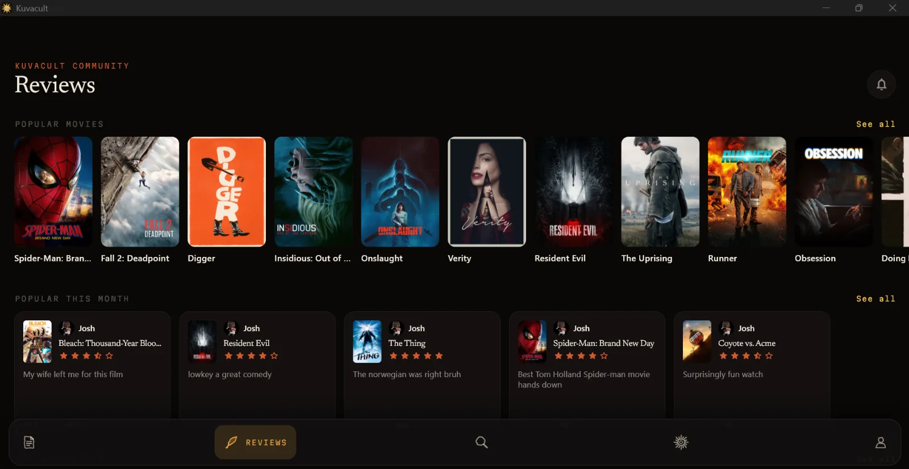

Blog
Notes from the cult.
Explainers, timelines and guides for people who watch movies with their friends.
Explainer · October 9
Where does Rogue One fit in the Star Wars timeline?
Between Revenge of the Sith, Solo, Andor and A New Hope.

Challenge · October 1
31 days of horror
One acclaimed horror film for every day of October, with a key for the whole month.

How-to · September 21
How to watch movies together online
Syncing streams vs sharing one screen, and how to host a free watch party in a séance.

How-to · September 8
How to make a shared watchlist on Letterboxd
What Letterboxd can and can’t do with shared lists, and how to set up one your whole group can edit.
Explainer · August 24
Where does Venom fit in the MCU?
How Tom Hardy’s Venom crosses into the MCU, and the four films to watch for the full crossover.

Comparison
Letterboxd vs Kuvacult
How the two film diaries compare on features, platforms and price.